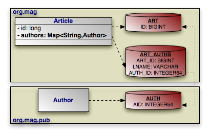

|  |
Map mapping in OpenJPA uses the same principles you saw in
collection mapping. The example below maps the
Article.authors map according to the diagram above.
Example 7.25. String Key, Entity Value Map Mapping
package org.mag.pub;
import org.apache.openjpa.persistence.*;
import org.apache.openjpa.persistence.jdbc.*;
@Entity
@Table(name="AUTH")
@DataStoreIdColumn(name="AID" columnDefinition="INTEGER64")
public class Author {
...
}
package org.mag;
@Entity
@Table(name="ART")
public class Article {
@Id private long id;
@PersistentMap
@ContainerTable(name="ART_AUTHS", joinColumns=@XJoinColumn(name="ART_ID"))
@KeyColumn(name="LNAME")
@ElementJoinColumn(name="AUTH_ID")
private Map<String,Author> authors;
...
}